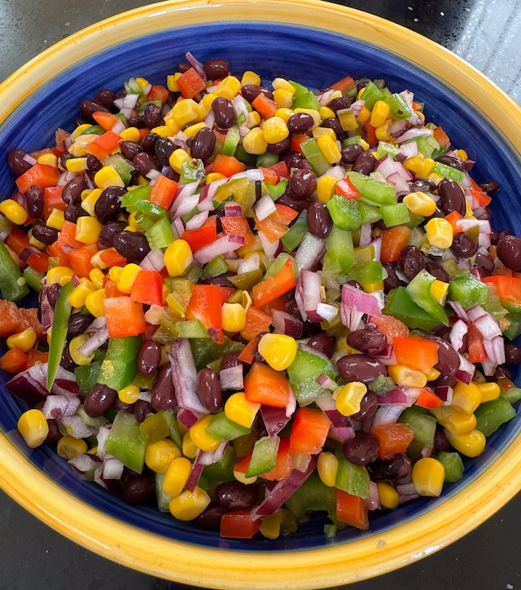

Black Bean Salsa

Serves: 4
Cook Time: 15 min
From reddit. Cilantro tastes like soap to me, so I don't put that in.
Ingredients
- 1 400g tin black beans, drained and rinsed
- 1 200g tin sweetcorn, drained
- 1 red onion, chopped fine
- 1 green pepper, diced
- 1 red pepper, diced
- 1 jalapeños, chopped fine
- 4 limes, juiced
- cilantro, chopped
- salt and pepper
Method
Chop the ingredients that need chopping, then mix together in a bowl with the lime juice. Taste for salt.